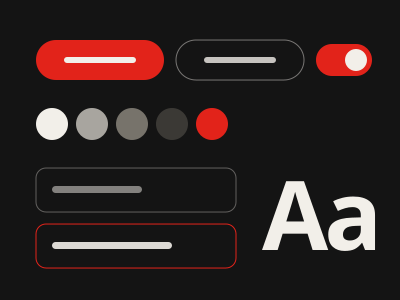
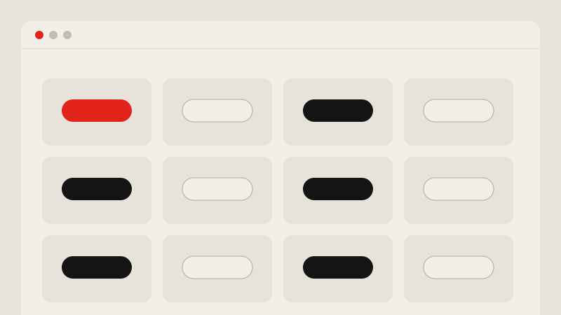
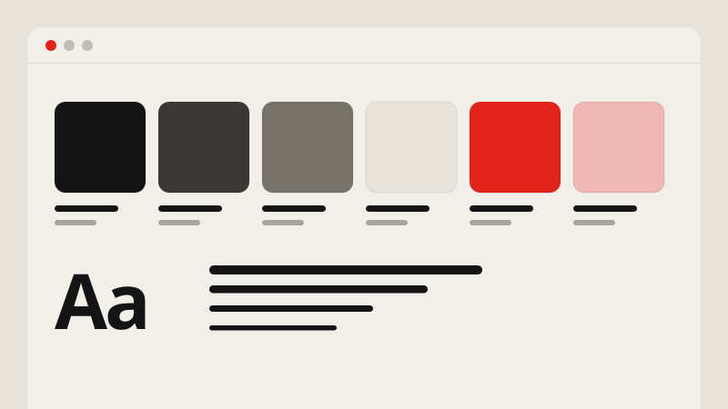
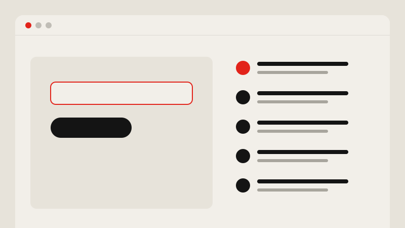

Libro Educação
Design System PluriConnect
Um Design System feito para crescer junto com a plataforma e pronto para ser lido por pessoas e por IA.

Contexto
A PluriConnect reúne gestão escolar e aprendizagem adaptativa para redes de ensino. Com o produto crescendo, cada nova funcionalidade trazia o risco de uma variação nova de componente, um nome de token diferente ou uma decisão que já tinha sido tomada antes.
O desafio
Transformar o Design System na fonte única de verdade entre design e front-end Angular, sem travar as entregas que já estavam em andamento.
Processo
Inventário
Levantei os componentes em uso no produto e no Figma, mapeando duplicações, estados faltando e inconsistências de nome.
Fundamentos
Reorganizei cor, tipografia, espaçamento e estados em tokens com uma nomenclatura única, pensada para design e código.
Componentes
Redesenhei os componentes com variantes, estados e regras de uso documentadas, prontos para o time aplicar sem dúvida.
Governança e handoff
Defini como o sistema evolui e um modelo de handoff no Figma com regras de comportamento numeradas.
Solução
Além da biblioteca e da documentação, montei um fluxo assistido por IA que extrai tokens e componentes direto do Figma e gera código Angular rastreável. Assim, telas criadas com ajuda de IA respeitam o sistema oficial em vez de inventar variações.



Resultados
- Uma fonte única de verdade entre design e front-end
- Handoff com menos ida e volta entre design e desenvolvimento
- Base pronta para gerar telas com IA respeitando o sistema oficial
Aprendizados
Design System não é só biblioteca, é acordo entre pessoas. O que fez o sistema pegar foi documentar o porquê de cada decisão e envolver o time de front-end desde o começo.